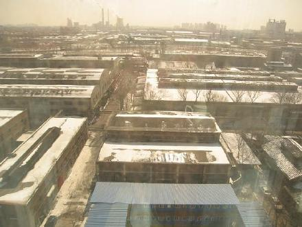
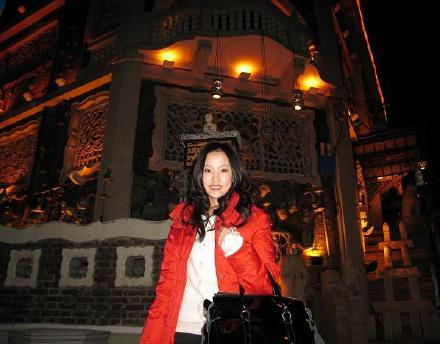
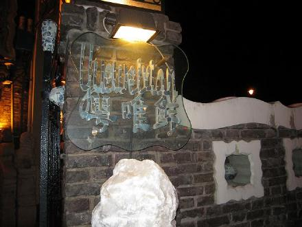
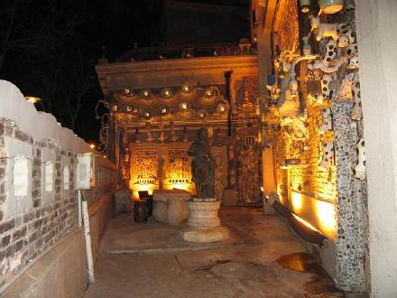
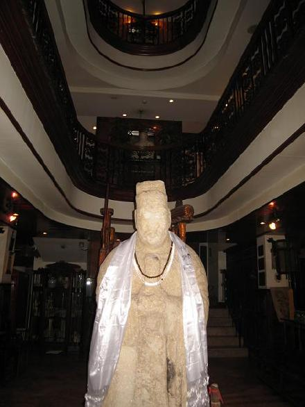
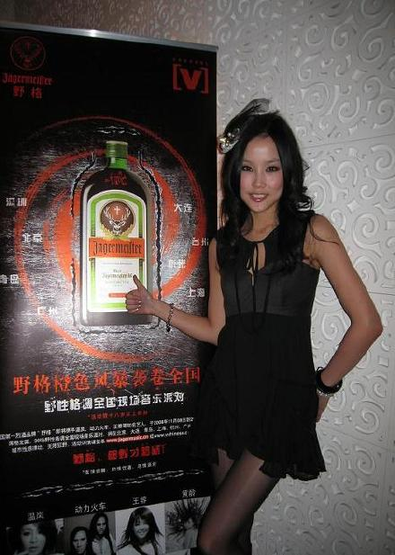
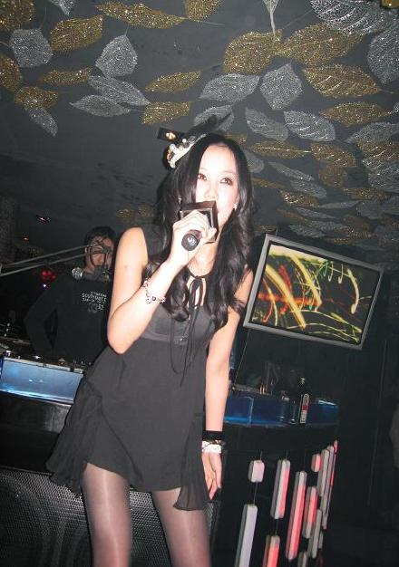
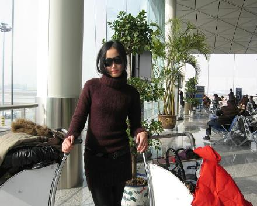

这是2月20日天津早晨,在酒店房间里用相机记录一下

睡了一整天,化一小妆去MINI CLUB走了走台,然后来到了据说是天津唯一的私人博物馆
边吃边看的博物馆

这里叫"粤唯鲜"

很有意思吧

被我的闪光灯闪了一下之后,饭店的中心人物显得更加没有五官

,干正事了

MINI CLUB真的很MINI,我只能站在领舞台上唱歌,本来要穿高跟鞋,由于实在太MINI,穿上高跟鞋我就得湾着腰唱歌了,没想到穿了平底靴还是只能凑合,脸被前面的广告纸挡住,导致舞台灯光只能直接照射到我脖子一下的位置,只有台下的观众用闪光灯才能拍到高大的我

再见天津
